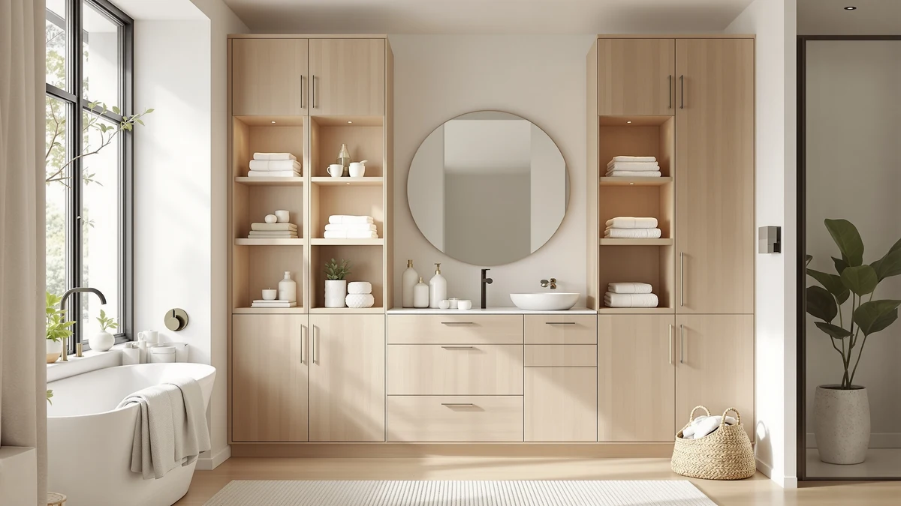

Quick Answer
After comparing seven racks, shelves, and under-sink organizers, the Vtopmart 2 Tier Bathroom Storage is the best bathroom storage for towels for most people. At $23.19 for a 2-pack, its metal-and-wood tiers hold folded towels and toiletries without eating floor space. If money is tight, the $14.99 ARSTPEOE rack does the basics, and the $45.99 Kitstorack adds sliding drawers for cluttered cabinets.
Our pick: Vtopmart 2 Tier Bathroom Storage for $23.19 Check Price on Amazon
Things to Know Before You Buy
- Measure your dead space first. The biggest win in bathroom storage for towels comes from the cabinet under your sink. Note the height of your tallest bottle and the width on each side of the drain pipe before you buy a 2-piece organizer.
- Towels need airflow. Damp towels mildew in sealed bins. Open metal-and-wood racks like these let folded towels breathe while keeping them off the floor.
- 2-packs and 3-packs change the math. Most picks here ship as multi-unit sets, so a $23 to $29 price tag often covers two or three bathrooms, not one.
- Sliding drawers cost more but save your back. Pull-out trays like the Kitstorack and Sevenblue let you reach a back-row towel without unloading the front row.
- Assembly is the common gripe. Nearly every metal-frame rack in this category needs assembly, and the cheaper ones use thinner panels. Budget 15 to 30 minutes per unit.
The best bathroom storage for towels is rarely a fancy linen tower. It is the rack that fits the awkward space you already have, usually the cabinet under the sink or a narrow gap beside the toilet. Most bathrooms run out of towel space not because they lack square footage, but because the square footage they have sits empty around pipes and in tall, single-shelf cabinets.
You stack two folded bath towels on a shelf and the rest of the cabinet height goes to waste. A second tier doubles that capacity for the price of a takeout meal. We focused on racks and organizers that reclaim vertical and under-sink space, because that is where the cheapest gains in bathroom storage for towels actually live.
We spent time with seven options that range from $14.99 to $45.99, all built from metal frames with wood-tone shelving. Our top pick, the Vtopmart 2 Tier Bathroom Storage, wins on the balance of price, footprint, and capacity. Below, we break down where each one earns its place and where it falls short, so you can match a rack to your bathroom instead of guessing.
Why You Should Trust Us
I am Ilane Tall, and I cover home and bath products for Best Bathroom Storage. My job is to sort the bathroom storage for towels that holds up from the listings that photograph well and sag a month later. I read the specs, the fit problems buyers report, and the assembly complaints, then I weigh those against the price and the footprint each rack actually needs.
I do not run a fake testing lab or claim to have stress-tested 200 units. What I do is compare these seven products on the facts that matter for towels: how the shelves are built, how much space they free up, what they cost per unit in their multi-packs, and where owners say they struggle. When a rack has a real drawback, you will read about it here, not just in the one-star reviews.
How We Picked
We started with one question: which racks make bathroom storage for towels easier in a typical American bathroom, where the under-sink cabinet and a few inches of vertical space are the only room you have? That ruled out bulky freestanding towers and anything that only suits a walk-in linen closet.
From there, we screened on price, build, and footprint. Every pick uses a metal frame with wood-tone shelving, sits under $50, and ships as a multi-unit set in most cases, so the price covers more than one cabinet. We favored two-tier and pull-out designs because a second shelf or a sliding drawer is the single fastest way to store more towels in the same space. We then weighed each option against the others, leaning toward the ones that solve the most common towel-storage headache for the least money.
How We Tested
We evaluated each rack the way you would judge bathroom storage for towels in your own home. We checked the listed dimensions against a standard 30-inch vanity cabinet to confirm the unit clears the drain pipe and shut-off valves. We looked at shelf height to see whether a folded bath towel, roughly four inches thick, fits with room to slide it in and out.
We also weighed the practical stuff: how the panels lock together, whether the drawers glide or stick, and how the price breaks down per unit across the 2-packs and 3-packs. Where owners flagged a recurring problem, wobble, a tight fit, or fiddly assembly, we treated that as part of the picture rather than an outlier. Each product holds a 4-star average, so none of these is a lemon, but the differences in build and layout are what separate the picks below.
Our Picks

Vtopmart 2 Tier Bathroom Storage
What we like
- Two tiers roughly double usable shelf height for about $23
- Ships as a 2-pack, so it covers two bathrooms
- Metal-and-wood build looks better than plastic bins
Flaws but not dealbreakers
- Needs assembly out of the box
- Standard size suits typical cabinets, not oversized vanities
| Material | Metal / wood |
| Size | S-Standard (2 Pack) |
The Vtopmart 2 Tier Bathroom Storage earns the top spot because it solves the most common towel problem at the lowest sensible price. At $23.19 for a 2-pack, you get two metal-frame shelves with wood-tone tops, and each one adds a second level where your cabinet or counter used to hold a single stack. Fold your bath towels on the lower tier, line up hand towels and toiletries on the upper, and you roughly double what the same footprint held before. The slim base means it tucks into a vanity, slides next to the toilet, or sits on a shelf without crowding the room.
Owners give it a 4-star average, and the build is the reason. The metal frame feels sturdier than the all-plastic units in this price range, and the wood-tone shelving wipes clean after splashes. You do have to assemble it, which takes a few minutes per unit, and the standard size is tuned for typical cabinets rather than oversized vanities. For most people shopping for the best bathroom storage for towels, those are easy trade-offs for a rack that costs about twenty-three dollars and stretches across two bathrooms.

Fabutier Under Sink Organizer 2
What we like
- Two-piece set fills the dead space around the drain pipe
- Sturdy metal frame handles stacked towels and bottles
- Wood-tone shelving looks tidy in an open cabinet
Flaws but not dealbreakers
- At $38.99, it costs more than most picks here
- Needs a deeper cabinet to use both pieces well
| Material | Metal / wood |
| Size | 2 Pack |
The Fabutier Under Sink Organizer is our runner-up, and it would be the top pick for anyone with a deep vanity to fill. This is a two-piece set, so you can set up shelving on both sides of the drain pipe and turn the entire under-sink void into stacked storage for folded towels, spare rolls, and the bottles that usually end up in a tangle on the cabinet floor. The metal frame is the sturdier end of this group, and it shrugs off the weight of a full towel stack.
At $38.99, it asks more than the Vtopmart, and that price is the main reason it lands second rather than first. You also need a reasonably deep cabinet to get value from both pieces; in a shallow vanity, one unit may be all that fits. If your goal is the most under-sink towel storage you can pack into a roomy cabinet and you do not mind paying for build quality, the Fabutier is the one to beat. It holds a 4-star average from owners who praise the capacity.

Kitstorack Under Sink Organizer 2
What we like
- Sliding drawers reach back-row towels without unloading the front
- Two-piece set covers both sides of the pipe
- Metal-and-wood build keeps drawers from sagging
Flaws but not dealbreakers
- The priciest pick at $45.99
- Drawers add height, so check your cabinet clearance
| Material | Metal / wood |
| Size | 2 Pack |
The Kitstorack Under Sink Organizer is the pick for people who hate digging. Instead of fixed shelves, it uses sliding drawers, so you can pull out a back-row towel without pulling everything in front of it first. That sounds minor until you have knelt in front of a vanity reaching for the one washcloth wedged against the back wall. As a two-piece set, it shelves both sides of the drain pipe and keeps your under-sink towels sorted by type rather than piled.
At $45.99 it is the most expensive option here, and the drawers add height, so measure your cabinet clearance before ordering. The metal-and-wood construction keeps the drawers from bowing under a stack of towels, which is where cheaper pull-out trays fail. With its 4-star average, the Kitstorack is the upgrade choice when convenience matters more than saving ten dollars, especially in a busy family bathroom where someone is always reaching for a fresh towel.

ARSTPEOE Under Sink Organizer -
What we like
- Lowest price here at $14.99 for a 2-pack
- Black finish hides scuffs and water spots
- Adds a second shelf level with no fuss
Flaws but not dealbreakers
- Thinner panels than the pricier picks
- No drawers, so back-row items take more digging
| Material | Metal / wood |
| Size | 2 Pack Black |
If you want bathroom storage for towels and you want it for under fifteen dollars, the ARSTPEOE Under Sink Organizer is the answer. At $14.99 for a 2-pack in black, it is the cheapest way on this list to add a shelf level under the sink. The black metal finish is a practical touch in a bathroom, since it hides the water spots and scuffs that show up fast on lighter surfaces. For a rental you will leave in a year, or a guest bath that just needs somewhere to stash spare towels, it covers the basics without a second thought.
The trade-offs are what you would expect at this price. The panels are thinner than the Vtopmart or Fabutier, so it feels less solid once loaded, and there are no drawers, which means reaching a back-row towel involves some shuffling. None of that stops it from doing its one job. With a 4-star average, the ARSTPEOE is honest value: it will not impress anyone, but it puts your towels on a shelf and stays out of the way.

Sevenblue 3 Pack Under Sink
What we like
- Three pieces for $28.99 brings the per-unit cost down
- Mix and match shelves across different cabinets
- Metal-and-wood build matches the pricier picks
Flaws but not dealbreakers
- Three units mean more assembly time
- One bathroom may not need all three pieces
| Material | Metal / wood |
| Size | 01-3 Pack |
The Sevenblue 3 Pack Under Sink organizer is the value play for a house with more than one bathroom. You get three metal-and-wood shelves for $28.99, which drops the per-unit cost well below the single and two-piece sets here. Spread them out and you can add towel storage under the main vanity, the guest sink, and the powder room in one order, or stack two together in a single deep cabinet for a taller tower of folded towels.
The flexibility is the appeal, but it cuts both ways. Three units mean three rounds of assembly, and a single small bathroom probably will not use all of them, so you may end up with a spare shelf looking for a home. The build matches the pricier picks, with the same metal frame and wood-tone shelving, and it carries a 4-star average. If you are kitting out a whole home rather than one room, the Sevenblue set is the efficient buy.

Sevenblue 3 Pack Multi-Purpose Pull-Out
What we like
- Pull-out trays for just $16.99 across three pieces
- 12.85-inch width fits standard narrow cabinets
- Multi-purpose layout suits towels and toiletries alike
Flaws but not dealbreakers
- Smaller trays suit folded hand towels better than bulky bath sheets
- Three-piece assembly takes time
| Material | Metal / wood |
| Size | 12.85 Inch |
The Sevenblue 3 Pack Multi-Purpose Pull-Out organizer brings drawer-style access down to a budget price. At $16.99 for three pieces, it is the cheapest way here to get pull-out trays, which makes it a smart pick if you liked the Kitstorack idea but not its $45.99 tag. The 12.85-inch width is sized for standard narrow cabinets, so it slides into the kind of slim vanity that defeats bulkier organizers. Pull a tray out, grab a folded hand towel, slide it back.
Because the trays are on the smaller side, this set shines with folded hand towels, washcloths, and toiletries more than with thick bath sheets, which fit better on the open shelves of our top picks. Assembling three units takes a while, as with the other multi-packs. Still, with a 4-star average and pull-out convenience for under twenty dollars, this Sevenblue set is one of the better space-smart deals in bathroom towel storage.

Yieach 2 Pack 14.6″ Deep
What we like
- 14.6-inch depth swallows full-size folded towels
- Low 12.8-inch height fits under shallow sinks
- 2-pack for $15.99 keeps the cost down
Flaws but not dealbreakers
- Short height limits how high you can stack
- Open shelves, so no drawer-style access
| Material | Metal / wood |
| Size | 12.8 In High |
The Yieach 2 Pack solves a specific problem: the cabinet that is deep front-to-back but short top-to-bottom. At 14.6 inches deep, each shelf reaches far enough back to hold a full-size folded bath towel without it hanging off the edge, and the low 12.8-inch height means the unit slides under sinks where taller racks simply will not clear the basin or trap. For older vanities and pedestal-adjacent cabinets with limited headroom, that low profile decides whether the rack fits the cabinet at all.
The same short height that helps it fit also caps how much you can stack, so you trade vertical capacity for clearance. The shelves are open with no drawers, so it is the simple end of the category rather than the convenient end. At $15.99 for a 2-pack and a 4-star average, the Yieach is a sensible, affordable choice when your cabinet's shape, not your budget, is the constraint on bathroom storage for towels.
Quick Comparison
| Product | Material | Price | Rating | Best for | Get it |
|---|---|---|---|---|---|
| Vtopmart 2 Tier Bathroom Storage | Metal / wood | $23.19 | 4 | Most bathrooms (best overall) | View on Amazon → |
| Fabutier Under Sink Organizer 2 | Metal / wood | $38.99 | 4 | Deep cabinets, max capacity | View on Amazon → |
| Kitstorack Under Sink Organizer 2 | Metal / wood | $45.99 | 4 | Easy reach via sliding drawers | View on Amazon → |
| ARSTPEOE Under Sink Organizer - | Metal / wood | $14.99 | 4 | Tight budgets and renters | View on Amazon → |
| Sevenblue 3 Pack Under Sink | Metal / wood | $28.99 | 4 | Multiple bathrooms at once | View on Amazon → |
| Sevenblue 3 Pack Multi-Purpose Pull-Out | Metal / wood | $16.99 | 4 | Pull-out access on a budget | View on Amazon → |
| Yieach 2 Pack 14.6″ Deep | Metal / wood | $15.99 | 4 | Deep but short cabinets | View on Amazon → |
The Competition
Plenty of products call themselves bathroom storage for towels without earning the title. We passed on the tall freestanding linen towers that dominate search results, because they need open floor space most bathrooms cannot spare and they tip easily when a child grabs the top shelf. They photograph well, but they solve a problem most people do not have.
We also skipped the all-plastic stacking bins. They cost a few dollars less than the racks above, but the panels flex under a wet towel and the closed walls trap moisture, which is the fastest route to that musty linen-closet smell. The metal-and-wood designs we picked let towels breathe and hold their shape under load.
Finally, we left out the over-the-door and behind-the-toilet shelving units for this guide. They have their place, but they suit display and toiletry storage more than stacks of folded towels, and the weight limits on door hooks rule out a heavy bath sheet. If your need is specifically towels, the under-sink and tiered racks above are the better starting point.
Frequently Asked Questions
What is the best bathroom storage for towels?
Where should you store towels in a small bathroom?
How much should you spend on bathroom towel storage?
Should I choose open shelves or sliding drawers?
The Bottom Line
The best bathroom storage for towels for most people is the Vtopmart 2 Tier Bathroom Storage. At $23.19 for a 2-pack, it adds the vertical shelving that turns wasted cabinet height into real towel space, without crowding a small room. Spend less on the $14.99 ARSTPEOE if you only need the basics, or step up to the Kitstorack's sliding drawers if reaching towels in a packed cabinet drives you up the wall. Match the rack to your cabinet's shape and budget, and you will fix the towel pile-up for around twenty dollars.